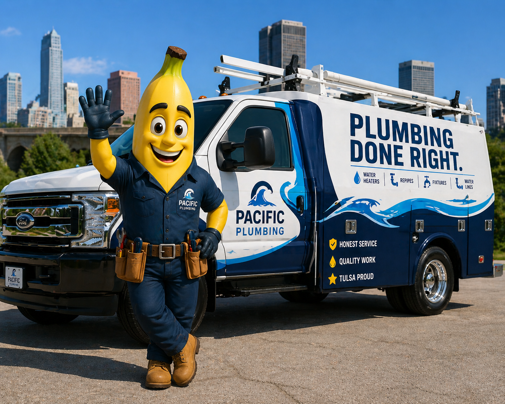
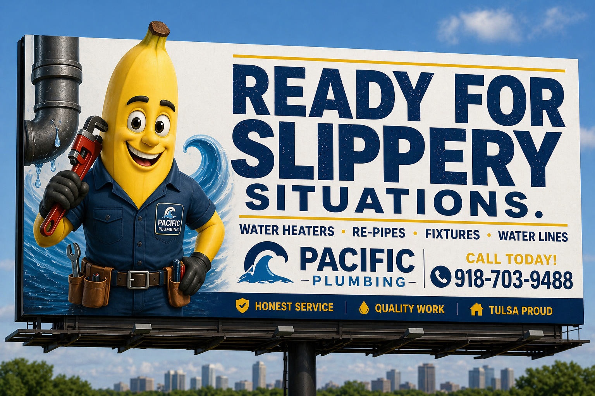

Tulsa proud plumbing service
Ready for slippery situations.
Water heaters, re-pipes, fixtures, water lines, and emergency plumbing handled by a local team that keeps things clear, clean, and calm.
Honest serviceQuality workTulsa proud

Plumbing without the panic
Tulsa plumbers who make the next step obvious.
Plumbing problems can make a normal day feel expensive in a hurry. Pacific Plumbing helps homeowners understand the issue, choose the right fix, and get back to normal without surprise pressure or muddy explanations.
Our services
Permanent solutions for everyday plumbing problems.
Pacific now has dedicated service pages built for homeowners and search engines, with unique local copy, FAQs, and schema for each priority plumbing need.
View all servicesWhy Pacific
Clear answers before the wrench turns.
A good plumbing visit should leave you more confident, not more confused. Pacific technicians explain what they find, give practical options, and keep the job site treated like home.
Up-front guidanceNo mystery work. No vague next steps.
Respectful techniciansClean uniforms, clear communication, and careful work.
Local accountabilityA Tulsa-area company building its name one home at a time.
How it works
Back to normal in three simple steps.
Call or book
Tell us what is going on and we will help you choose the right timing.
Get clear options
We inspect the issue, explain what we found, and walk through practical fixes.
Enjoy dry floors
We complete the work carefully, clean up, and leave you with confidence.
Trust signals
The kind of plumbing visit people remember for the right reasons.
Real reviews should be connected before launch. The site is structured to feature trust proof without inventing review ratings.
"They explained the issue clearly, gave us options, and had hot water back the same day."
Water heater customer
"The crew was clean, quick, and honest about what needed to be fixed now versus later."
Re-pipe customer

A brand Tulsa will remember
Memorable on the road. Reliable in your home.
The campaign gets attention. The website turns that attention into confidence by pairing the playful billboard with grounded proof: service clarity, local pride, and practical plumbing expertise.
Schedule serviceService area
Serving Tulsa and nearby communities.
Pacific Plumbing is built for homeowners across the Tulsa metro who want service that feels fast, fair, and easy to understand.
Explore service areasTulsaBroken ArrowBixbyJenksOwassoSand SpringsGlenpoolClaremore
Ready when you are
Get out of a slippery situation today.
Call now or request a service window. Pacific Plumbing will help you understand the problem and choose the right fix.